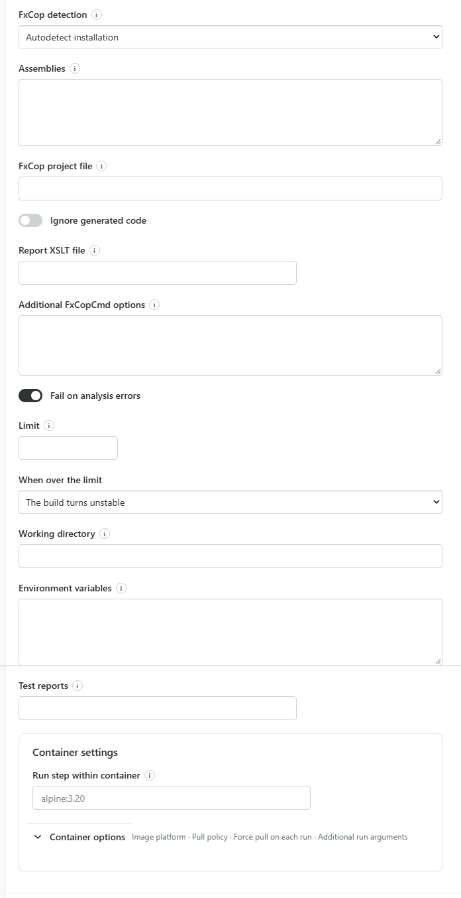

FxCop
Runs FxCopCmd on assemblies or an FxCop project and lists the issues on the build. It runs on Windows agents only, and the tool is not part of Buildspawn.
When to use it
Use it to check compiled .NET assemblies against code rules, for example your gameplay library before release.
How to set it up
- Open the build configuration and click Settings › Build Steps.
- Click Add build step. Type
FxCopin Filter step types if you like, then click the FxCop tile (group Code quality and coverage). - Type a Step name, for example
FxCop. - Fill in the fields described below.
- Optional: set Execute step, Conditions and Retry on failure. See The steps list and the step editor.
- Click Save.

Every field
| Field | What it does | Default | Example |
|---|---|---|---|
| FxCop detection | Autodetect installation runs FxCopCmd from the agent's PATH and the build configuration asks for an agent that has it. Specify installation root names the folder. | Autodetect installation | Specify installation root |
| Installation root | The folder that holds FxCopCmd.exe. Shows for Specify installation root. | Empty | C:\Program Files (x86)\Microsoft Fxcop 10.0 |
| Assemblies | One assembly, folder or wildcard per line, relative to the working directory. Each is passed as /file:. Give assemblies, a project file, or both. | Empty | bin/Release/Game.Core.dll |
| FxCop project file | Passed as /project:. | Empty | Rules/Game.FxCop |
| Ignore generated code | Passed as /ignoregeneratedcode. | Off | On |
| Report XSLT file | Passed as /outXsl:. The XML report stays XML, with a reference to the file, and its issues are listed on the build. | Empty | Rules/report.xsl |
| Additional FxCopCmd options | One option per line, for example /dictionary:CustomDictionary.xml. | Empty | /dictionary:Words.xml |
| Fail on analysis errors | On: any exit code other than 0 fails the step. Off: analysis errors and rule exceptions (codes 1 and 2) are tolerated and the issues are still listed. | On | On |
| Limit | Optional. The step is worse when it finds more issues than this number. Empty means no limit. | Empty | 0 |
| When over the limit | The build turns unstable or The step fails. | The build turns unstable | The step fails |
| Working directory, Environment variables, Test reports, Run step within container | The same in every runner. See Fields every runner has. |
A worked example
Check the core library. Step name FxCop, Assemblies bin/Release/Game.Core.dll, tick Ignore generated code, Limit 0, When over the limit The build turns unstable.
What you see when it runs
The console shows the FxCopCmd command. The build page lists the issues on its Code Inspections page: how many issues, errors, warnings and notes, in how many files. Over the limit, the build turns unstable or the step fails.
Problems and fixes
| Problem | What to do |
|---|---|
| The FxCop step runs on Windows agents only | Run it on a Windows agent. |
| The FxCopCmd command was not found on this agent | Install FxCop, put FxCopCmd on the PATH, or give the installation root. |
| The FxCop step has no assemblies and no project file | Fill in Assemblies or FxCop project file. |